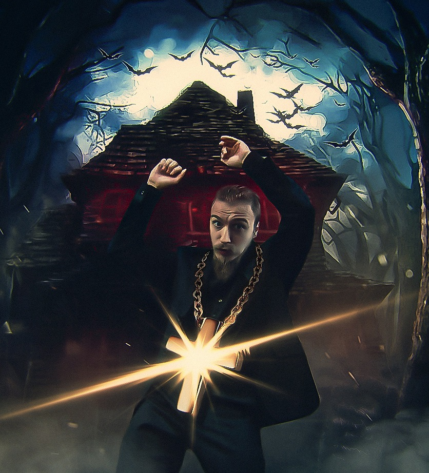
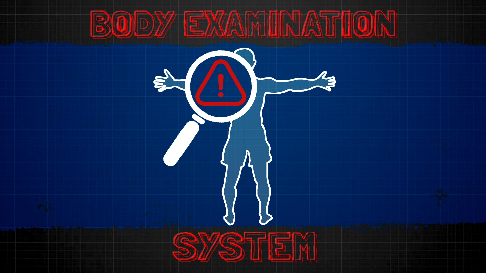
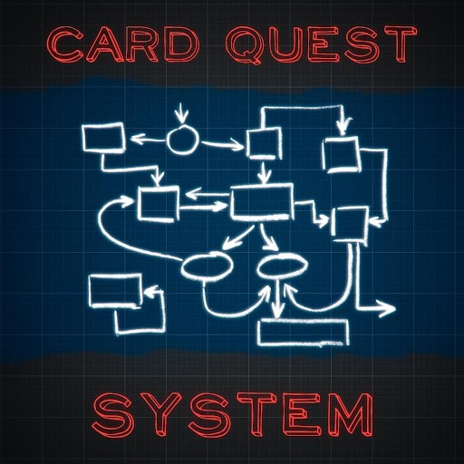
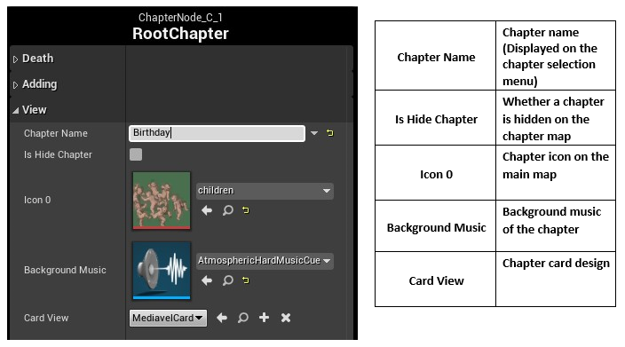
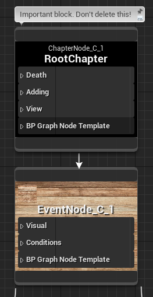

Портфолио
|
 Приветствую! |
Предпочтения |
|
Чаще всего, для разработчика игр важно, обладать богатым опытом и познанием в играх. |
Образование |
|
Оператор электронно-вычислительных и вычислительных машин, Мастер по обработке цифровой информации |
|
Шатурский Энергетический Техникум с 2013 по 2017 |
Опыт работы |
Период |
|
Middle Gamedev Developer, MASD (удаленно)
Проект:
Шутер жанра королевская битва в сеттинге пост-апокалипсиса и киберпанка, с
интеграцией блокчейн технологий. Платформа – ПК
Планирование и построение базовой архитектуры проекта
Команда: Всего в разработке проекта занято 10 чел., из которых 2 Middle Unreal Engine Developer
Достижения:
Мои компетенции в Unreal Engine:
|
Январь 2022 - Июль 2022 |
|
|
Мои работы |
|
Симулятор бога лучной стрельбы с элементами охоты и выживания. |
|
Мультиплеерный шутер от первого лица с механиками королевской битвы и интеграцией блокчейн технологий. |
|
РПГ в сеттинге средневековья с ориентированной системой боя (проект на данный момент заморожен) |
|
 С помощью этой системы можно сделать обследование ран и их лечение. Например, вы можете сделать захват застрявших стрел или пуль из своего тела.
|
|
 Card Quest System - это актив, на основе которого можно разрабатывать карточные квесты, сторитэил и т.п. без особого труда и без знания языков программирования!
 Глава Корневой главы является обязательной!  Передний узел карты может появиться только после узла событий. За ним может последовать один или несколько результирующих узлов карты |
Контакты
📱89775096765